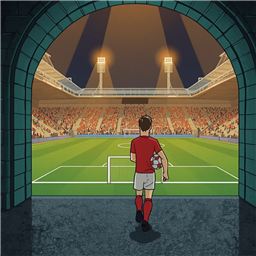

My Football Life
A football life simulator. Be a pro, a manager or a referee.
Not one season, a whole life: from kicking a ball about at the park as a kid to the last game of a long career, and whatever you do after that. Choose where your life begins, then live it one match, one contract and one decision at a time.
Four ways to live a football life
- The full journey. Start as a child, get spotted by an academy and chase a career from non-league to the very top.
- The manager's path. Pick the team, set the tactics, work the transfer window and keep the board on side.
- The referee's path. Take up the whistle and climb the officiating ladder. Every call is yours.
- The agent's path, an optional unlock. Sign clients, negotiate contracts and broker transfers.
Play the big moments
Follow every match live on the tactics board. When the moment is yours, the game cuts to a 3D pitch: take the free kick, pick the pass, go for goal.
Help and contact